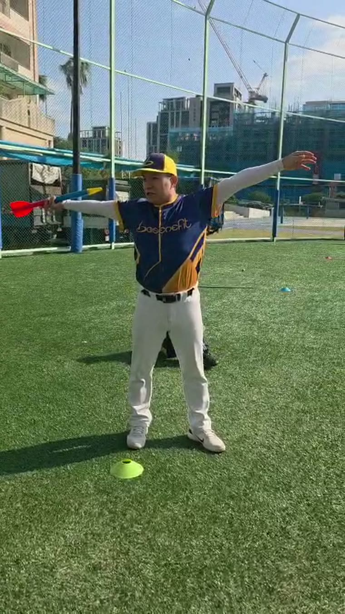

雙臂平舉的預備位置
Level arms in the start position

手臂像標槍一樣整支伸直，方向往前、不跑歪，末端朝前把球送出去。四格看得到從平舉到完全的伸展路徑。
The arm extends like a javelin: straight, on line, tip forward. Four frames show the path from level arms to full extension.
Level arms in the start position

手臂像標槍一樣整支伸直，方向往前、不跑歪，末端朝前把球送出去。四格看得到從平舉到完全的伸展路徑。
The arm extends like a javelin: straight, on line, tip forward. Four frames show the path from level arms to full extension.